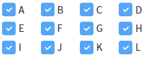
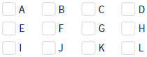

Checkbox의 'checkAll' 메소드를 사용하여 모든 항목을 선택하거나 선택을 해제하는 예제입니다. 메소드의 첫 번째 인자를 true로 설정하면 모든 항목이 선택되고, false로 설정하면 모든 항목의 선택이 해제됩니다.
모든 항목을 선택하거나 선택 해제하기
1
STEP 1: '모든 항목 선택하기' 버튼을 클릭합니다.
2
STEP 2: 실행된 결과를 확인합니다.
모든 항목이 선택됩니다.
Image 1.브라우저(Chrome) 실행 예시

3
STEP 3: '모든 항목 선택 해제하기' 버튼을 클릭합니다.
4
STEP 4: 실행된 결과를 확인합니다.
모든 항목의 선택이 해제됩니다.
Image 2.브라우저(Chrome) 실행 예시

Checkbox의 'checkAll' 메소드를 사용하여 스크립트를 작성합니다.
Example 1.Script
// Checkbox 'cbx_main'의 모든 항목을 선택하기 cbx_main.checkAll(true); // Checkbox 'cbx_main'의 모든 항목의 선택을 해제하기 cbx_main.checkAll(false);
checkAll( checkFlag )